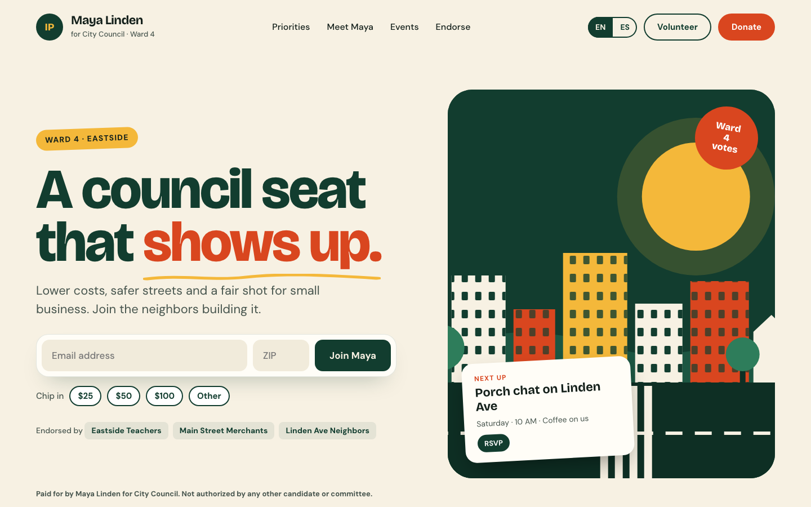
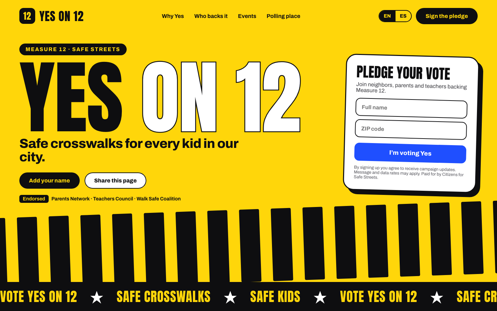
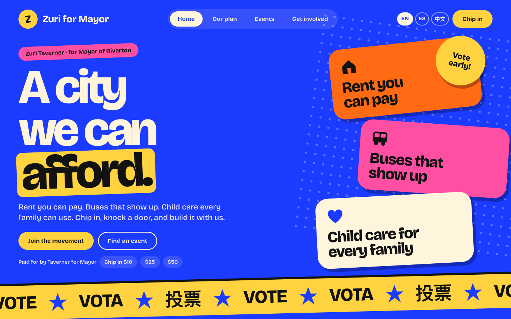
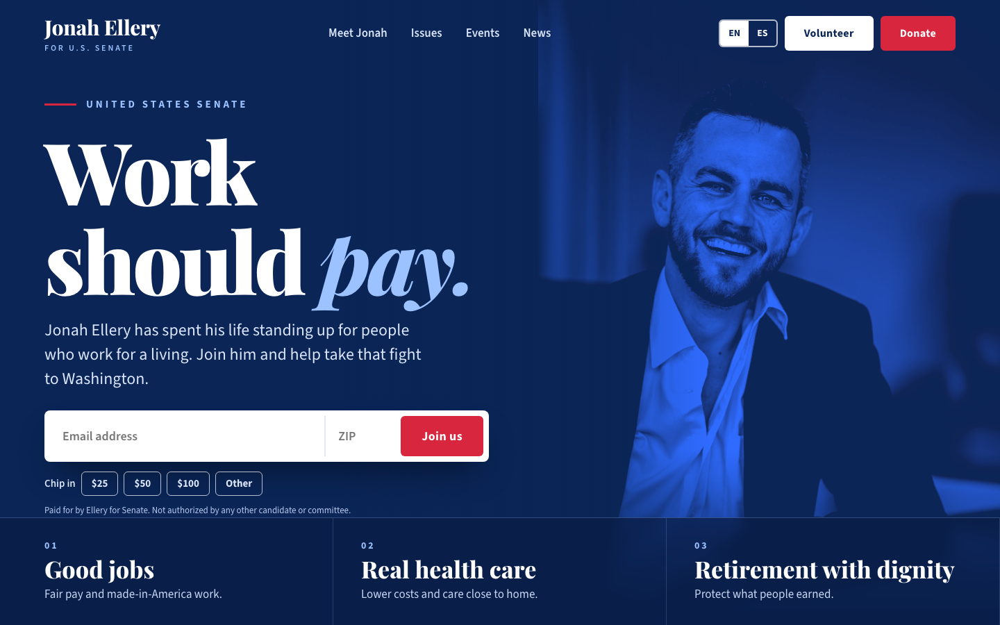
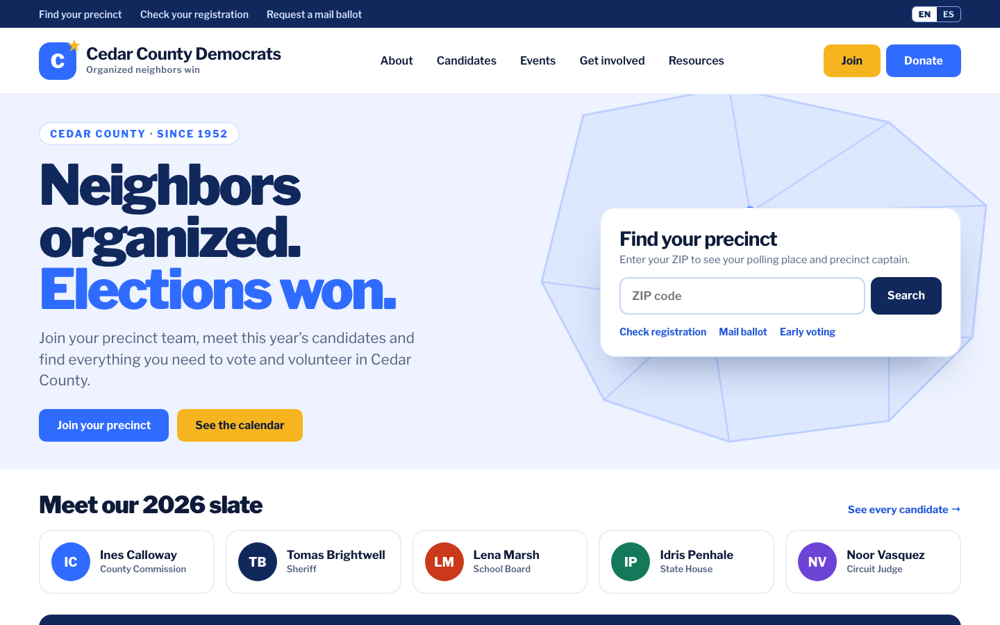
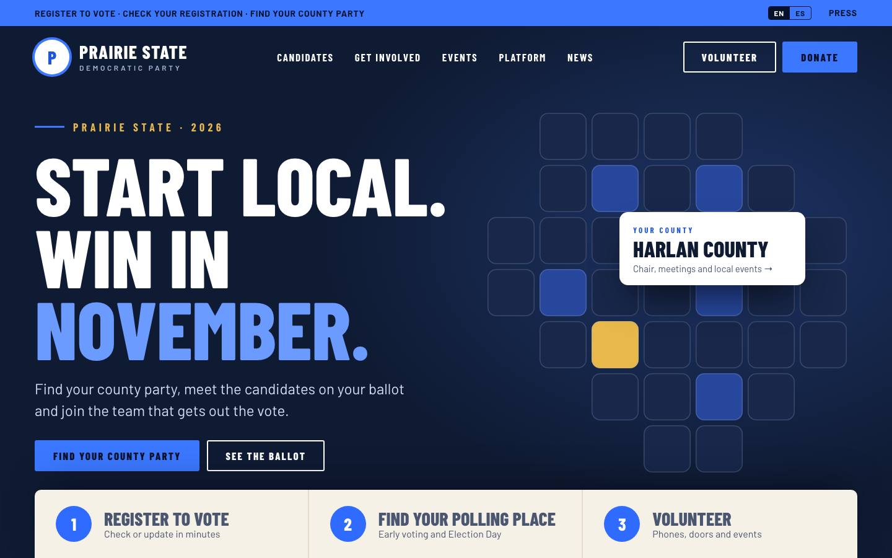
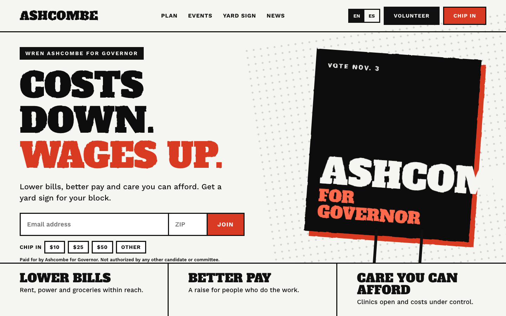

City councilWarm, local, neighbor-first

Ballot measureBold pledge-the-vote campaign

Mayoral movementProgressive, loud, multilingual

U.S. SenatePhoto-led, statewide, serious

County partyFind your precinct, meet the slate

State partyFind your county, get involved

GovernorGrassroots print-poster energy